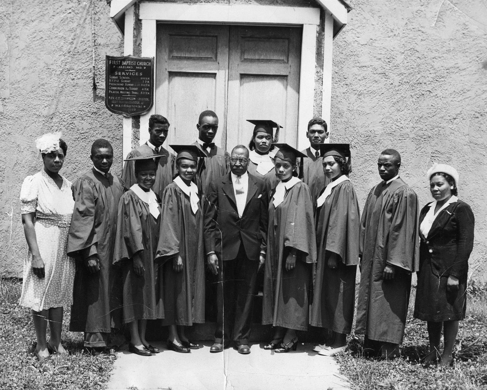
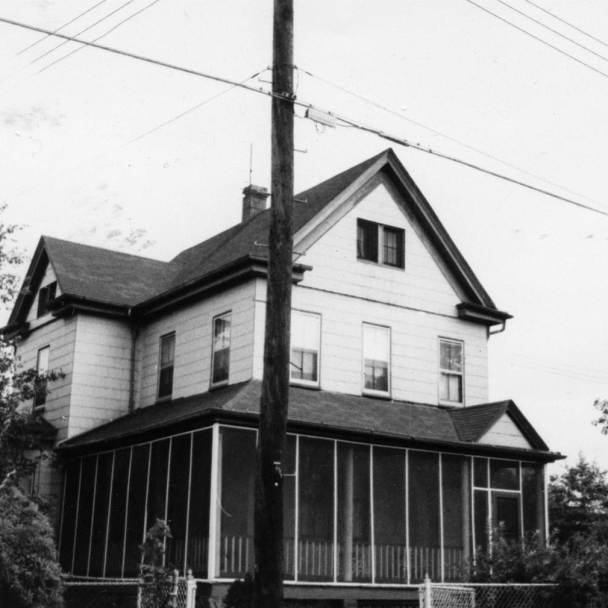
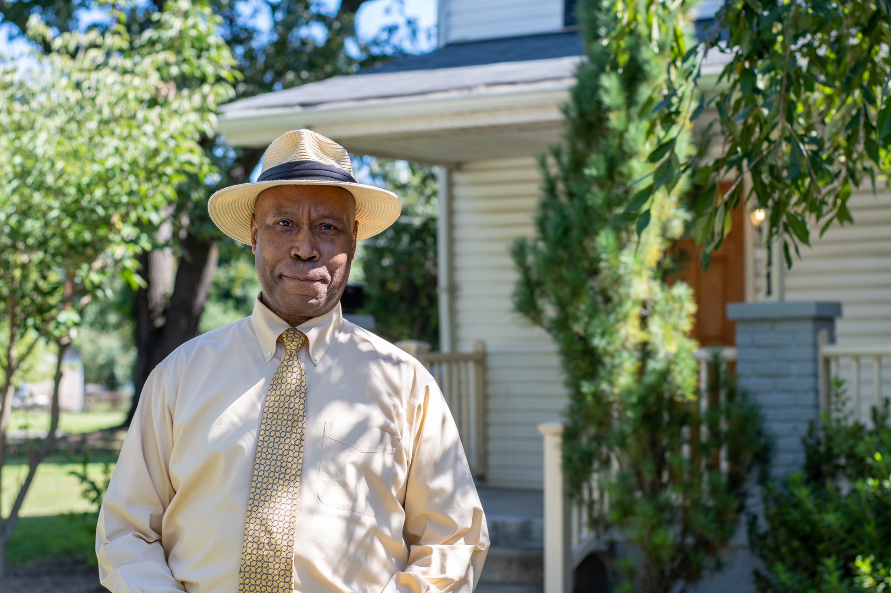
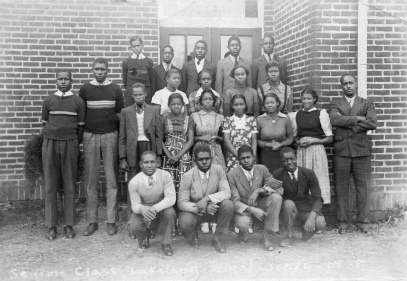
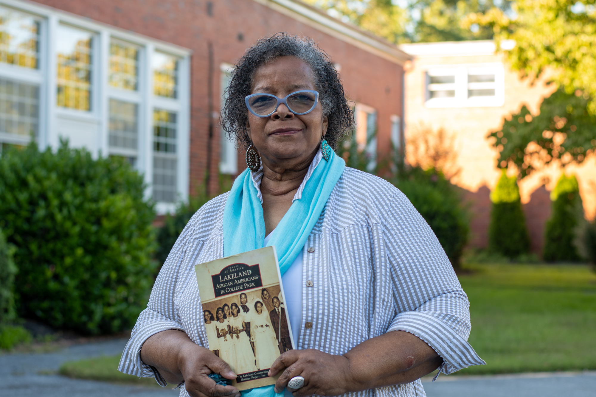

Written for The Diamondback
September 21, 2020
Any time George Randall was up to no good when he was a kid, not only would he get a scolding and a spanking before even getting home, but by the time he opened up his door, his mother would already know exactly what he had done.
Now 66 years old, Randall chuckles as he remembered just how fast his childhood hijinks were foiled. He says it takes a village to raise a child, and for him and his four older siblings, that village could be found along the tree-lined streets of College Park’s Lakeland community — a historically Black neighborhood.
Just like her little brother, Pamela Randall-Boardley has fond memories of her childhood in Lakeland. She still remembers the day a white man glanced sadly at her as she was selling some of her books in Hyattsville. “Oh,” she recalls him saying. “A little poor child.” The incident disturbed her, because she never considered herself poor — far from it.
“I cannot ever remember not having a meal on the table or ever being hungry, never remember being without shoes or clothes or things of that nature,” she said. “It was just a happy, happy time for me.”
From the late 1890s to the 1950s, during a period of legalized segregation, Lakeland thrived, tied together by faith and a strong sense of community. The neighborhood had just about everything its residents could want: two convenience stores (owned by the Macks and the Blacks), hair salons, recreation centers, a beer garden and one of the only Black high schools for cities located along Route 1. If someone needed a particular service, they knew exactly who to call.
Today, Randall and his sister can hardly recognize the community where they grew up. Only a third of the original Lakeland neighborhood remains intact.
Everything changed after the city approved the Lakeland Urban Renewal Plan in 1970. Though the project promised to upgrade housing in the area, it devastated the community. By the early 1970s, the city had destroyed 104 out of the 150 homes in Lakeland, eventually triggering the exodus of about two-thirds of the community’s residents and shuttering all of the businesses in the area.
Some families sold their houses in the neighborhood to landlords, many of whom now rent to students at the nearby University of Maryland. For those who come back to visit Lakeland, it’s painful to see homes that hold so many memories not be theirs anymore.
"I still feel like I’m a part of Lakeland and will always be."
Earlier this summer, as the nation reckoned once again with systemic racism in its institutions, the College Park City Council formally apologized to the Lakeland community for the oppression it faced at the hands of the city and promised to examine its current policies and programs for evidence of continued discrimination.
Moving forward, Mayor Patrick Wojahn said the city has several conversations planned for the upcoming months to address racial equity in College Park. Not only do council members want to discuss this topic among themselves, but they want to know what residents have to say as well, Wojahn said. The past treatment of Lakeland, as well as what is necessary to heal the community’s relationship with the city, is a big part of these conversations, Wojahn said.
“The purpose of having the conversations is to determine how the community wants us to proceed in terms of addressing the history of the city’s actions toward Lakeland. It is important that it be community-informed,” Wojahn said.
But for Randall-Boardley and others who lived through the neighborhood’s destruction, any attempt to try and make up for the damage done and the pain caused is futile. No matter what, they say the community cannot be completely restored to what it was.
“You cannot feel how we feel,” Randall-Boardley said. “You could crawl all over Lakeland, it would not be enough. I’m sorry, it would not be enough.”
Lakeland’s origins trace back to the 1890s, when a developer bought the land, with plans to build it into a resort-style suburb. At that time, Prince George’s County was mostly populated by white families — exactly the type of homebuyer the developer was envisioning for the community, said Lakeland Community Heritage Project director Maxine Gross.
But the area, largely covered in wetlands, proved difficult for development. As an economic downturn set in, the developer failed to attract enough interested white homebuyers to fill all of the neighborhood’s properties, Gross said.
Rather than leave the homes empty, the developer began renting properties to Black families who had settled near Paint Branch and Indian Creek, east of the railroad tracks.
As Black families moved in, though, white families moved out — some even burning down their homes as they left, leaving only rubble in their place, to prevent Black tenants from renting them, Gross said. However, old newspaper articles would accuse the Black tenants of burning down the homes, she added.
When Gross was little, she said she didn’t believe this part of her community’s history. She couldn’t fathom why people would burn down their own homes.
Decades later, Gross still lives in part of the Lakeland neighborhood that remains, and she works with the Lakeland Community Heritage Project to collect and safeguard the neighborhood’s memories and history. Along with acknowledging the racism associated with the neighborhood’s founding, the project also celebrates what came after — how the community bloomed amid discrimination and segregation.
According to the heritage project’s website, by 1903, Lakeland had opened two churches — the First Baptist Church and the Embry African Methodist Episcopal Church — and one school. As the community grew, the original school was replaced by a larger facility, and the neighborhood gained an elementary school in 1925 and a high school in 1928 to serve the area’s African American students.
Representatives of other communities along Route 1 joined together with Lakeland residents to request funding for the construction of Lakeland High School, and until the student body was moved to a new high school in 1950, the facility served as a cultural and social center for Black communities in northern Prince George’s County. If you were a Black person living in Montgomery County or Prince George’s County during the ’60s and ’70s, one former resident said, you most likely knew something about Lakeland. Everyone was in some way a part of the community, the former resident said.
“I still feel like I’m a part of Lakeland and will always be,” Randall-Boardley said.
Even as the community thrived, though, its location near Paint Branch and Indian Creek brought its share of challenges. Residents were battered by yearly flooding, which wore down the structures of their homes and caused some to lose possessions. By 1961, many of the houses in Lakeland didn’t meet modern city housing standards, according to the community’s heritage project.
So, with some reluctance, the community turned to the city for help, which in turn requested federal aid to assist with paying for flood control efforts, redevelopment and home renovations. Ultimately, this funding was packaged in the Lakeland Urban Renewal Plan, which the city approved in 1970.
Violetta Sharps Jones grew up in Lakeland and remembers conversations surrounding the plan as being confusing and controversial within the community. At first, Sharps Jones recalled, many were optimistic about what the plan would do for Lakeland. Not her mother, though — she was against it from day one and believed urban renewal was never going to benefit the neighborhood’s residents.
The same year the Urban Renewal Plan was passed, Sharps Jones left Lakeland to move to California with her husband. Even after she left, though, her mother kept her tuned into the community’s happenings. Thousands of miles away, Sharps Jones watched her former neighbors turn against the plan as the city made and broke promises in a seemingly never-ending cycle.
In 1977, The Washington Post reported that Lakeland residents weren’t consulted about the changes being made to their homes and to the area. Though residents had hoped new single-family homes would be built as part of the renewal plan, the city instead approved the construction of the Spellman House, a 150-unit senior citizen apartment complex, and the Berkeley Project, which includes a six-story apartment building with 128 units and 32 subsidized townhouses for low- and middle-income residents. The approved plans only included the construction of 26 single-family townhomes and six single-family homes.
As homes were torn down to make room for the new development, many residents were pushed out of Lakeland. Though the city said they wouldn’t have to relocate and reconstruction would only take three years, residents were forced to move out of the area for years at a time. By the time redevelopment was finished, the homes weren’t what the community wanted or needed, and it didn’t make sense to move back to Lakeland after settling down somewhere else for more than a decade.
This wasn’t just happening in Lakeland. All over the country in the mid-20th century, cities were requesting federal funding to revamp their communities in an effort to prevent middle-class families from moving to the suburbs, according to the University of Oklahoma’s Institute for Quality Communities. Too often, this meant targeting neighborhoods largely occupied by Black families.
In Pittsburgh, the Urban Redevelopment Authority razed some 1,300 buildings in the city’s oldest Black community during the ‘50s and ‘60s to clear way for an entertainment and arts center, displacing about 8,000 residents in the process. And in Charlotte, North Carolina, the city bulldozed a small community called Brooklyn, destroying prominent Black churches, shops, restaurants and homes to make space for the NASCAR Hall of Fame and projected residential and office development.
Today, gentrification disproportionately affects African Americans, as well as other minority groups in urban areas, in the effort to increase property values. According to a study done by the National Community Reinvestment Coalition, from 2000 to 2013, 20,000 African Americans were displaced from their homes in Washington, D.C. The same study found that Washington, D.C., was the most gentrified city by percentage of eligible neighborhoods that experienced gentrification.
Back in Lakeland, Sharps Jones says the city’s actions took an axe to deeply established familial roots.
“You did not have a group of unrelated people or just transient people that moved into the Lakeland community,” Sharps Jones said. “Instead, you had multiple generations of people … [Nobody considered] how devastating this was going to be to them.”
In the wake of the city’s urban renewal plan, families who had lived in Lakeland for years left the community. Some felt it was more financially sound to do so before the project started. The houses weren’t what they wanted, and it would be better for them to settle elsewhere. Others were forced to leave as their homes were bulldozed. With the community slowly being destroyed around them, others felt there was no reason to stay.
Sharps Jones’ parents left in February 1975 because her mother feared staying in Lakeland would suck their money dry. Her younger sister stayed in their family home for several days after her parents left because she was so devastated about the move. Sharps Jones currently lives in Upper Marlboro, but comes back to visit often. She still has old friends living in the community and is an active member of the community’s heritage project.
Sixty-eight-year-old Keith Webster moved away from the community when he was 14 to attend an integrated school, but he managed to keep his home in Lakeland up until 20 years ago, when his family decided to sell it. His family home now serves as student housing. Webster still comes down to Lakeland to visit friends or drop by the church, but he finds it difficult to go back and visit his old home, he said.
“Too many memories, too many emotions,” Webster wrote in a text message. “It’s one of my 7 personal guilts when instead it should have been an heirloom.”
Webster said the makeup of Lakeland’s residents has changed a lot over the years. Back in the day, he said some students would rent rooms in Lakeland, but they were by no means the neighborhood’s dominant demographic. Now, they rent out of the new properties or from the family homes of original residents, making up a decent portion of the area’s population. Webster said he doesn’t mind it. He has always been an advocate for students and educators, and he said he understands living in Lakeland is an affordable option for them.
“Many students are looking for the best opportunities, the best things that they can possibly get. Lakeland is one of those communities where it’s right there on campus,” Webster said.
Randall-Boardley and her brother said their parents were able to keep their generational family home. It wasn’t until their mother died, a little over a year ago in that same home, that they had to sell it. It was gut-wrenching for them to give up such an important piece of their family history. It’s now being used as student rental property.
Randall says a lot of the buildings that were taken down — such as the school and the community center — changed the neighborhood’s community. The relationships between families that kept the area tight-knit are no longer there. The shops are gone. All that’s left of the utopia is the memory.
“There’s so many things that have been lost,” he said.
Though the city destroyed much of the original Lakeland neighborhood, the community survived in the stories and memories of its residents. But as time passed, so did many of the people who at one time made their home along its shaded roadways.
Realizing that many of their friends and family members were passing away, a collection of Lakeland residents formed the Lakeland Community Heritage Project in 2007. So many people didn’t understand that Lakeland was a thriving Black community.
The residents digitized photographs, transcribed oral stories and collected anything that could help bring the original neighborhood back to life. Two years later, they published a book to serve as a tangible memory of their culture and history: Lakeland: African Americans in College Park.
“We understood that if we didn’t write it down or preserve the story, then nobody in the future would know,” Gross said.
Since then, the project has continued to collect bits and pieces of Lakeland’s past to keep its memory alive. Members have held events with Lakeland residents to speak about their lives and about the urban renewal plan. They’ve done walking tours with maps in the areas that have been redeveloped. They began their own digital archive and, with the help of grants and the university, have been fine-tuning and organizing it. It includes hundreds of stories, photos, newspaper clippings, maps and other parts of Lakeland’s history.
For the heritage project, Sharps Jones honed her genealogical skills and managed to plot family trees for Lakeland residents all the way back to its first settlers, and even its ancestors before that. Living in Lakeland, she was told she had cousins all over the neighborhood, but she didn’t know how many of them she was really related to. After combing through Lakeland’s shared history, she managed to find out how some of the residents’ families intertwined.
But even for those who weren’t related, Lakeland was one big family, Sharps Jones said. And, Gross says, that’s what made Lakeland what it was.
“Here, we made families,” she said.